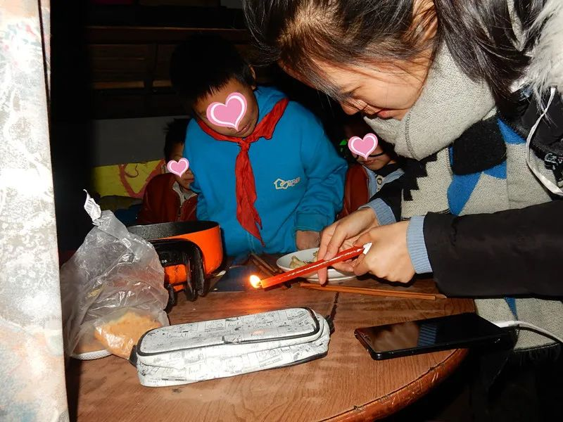
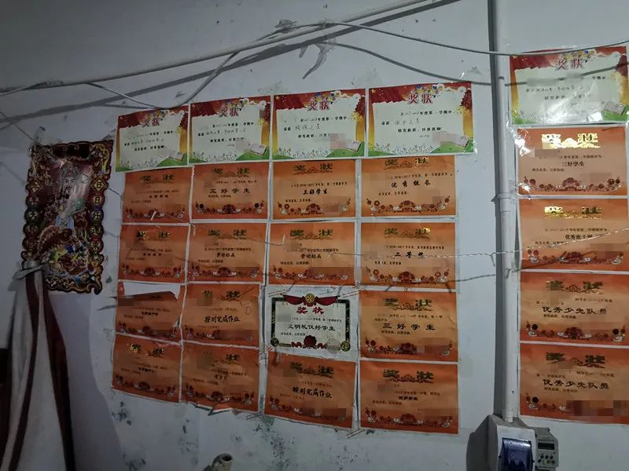

疫情下的深呼吸 | 不上班就得吃老本，我们没钱吃啥老本
原文链接 备份链接 不上班就得吃老本，我们没钱吃啥老本 口述者：刘兴（化名） 打工所在地：北京 编者注：刘兴，51岁，1988年从内蒙农村来京打工，右眼失明，左眼白内障，因手术风险较大无法做手术。现在做车管员工作。妻子36岁，智力二级残 …
这疫情，可得赶快过去
口述者：小梅（化名）/河南信阳籍
打工所在地：北京
编者注：小梅，女，44周岁，中专毕业，河南籍在京务工人员，患有高血压、糖尿病。丈夫做外墙保洁，也兼做临时工，患有腰间盘突出。小梅在一所民办打工子弟学校做代课老师，每月工资除去五险，到手有2000元左右，丈夫月收入4000元，一家六口人勉强维持生计。
因为疫情不得已留在北京过年
我们原计划腊月二十八返乡，孩子爸爸有一个保洁的活儿想做，结果因为疫情没有做成，也回不了老家。腊月二十七、八日才听说这个病情，开始没重视，大年初一忽然网络、微信上到处都在讲这个，才觉得严重。
过去每年都有回家，老家孩子奶奶80多岁，每年都回去看，每年也就这个时候一家人能聚一下。这次回不去了，孩子他爸也没办法，只能等疫情结束之后再找时间回去看看。现在这情况家里人也不让我们回去，回去也得隔离起来，只好留在北京，路上怕风险更大，河南也是重灾区，管的比这里都严。
我们这里有两个大院，几百个来自全国各地的打工家庭，从腊月二十一到腊月二十七、八，就陆陆续续回老家过年了，现在这一片也没几家人在了，对我们来说反而安全点。现在也没有什么人来给我们宣传什么防护措施，都是看新闻，知道情况严重，就不让孩子出去，其实也没地方去。
现在，我们这边小区也封起来了，有社区值班队，设立关卡，大院里其他人家也陆续回来，也都通知需要在家隔离，我们也就不出门了。我们这边一次一家就让出去一个人，都封着，不让随便走。这个倒不是问题，问题是没有钱也出去买不了东西。

小梅家门口的过道（拍摄于2019年8月）
如果感觉不舒服，再咨询协作者
我有高血压，糖尿病，身体弱虚胖，也是经常吃药。孩子他爸主要是腰间盘突出，工作上不能做重活儿，所以有些活儿就做不了。一般不去医院，平时也就感冒发热，去村里诊所拿点药就行。
我们都没有签合同，我有五险，他爸什么都没有，连工作都不稳定。我好歹有保险，在北京如果看医生还好点，不过没事也不去。孩子他爸和小孩儿都是家里的新农合，别的没有。一个是不知道有什么保险，也交不起，能生活就不错了，没有想过上保险的事情。他爸做临时工，平时都是哪里有活儿哪里做，老板不会考虑给上保险，自己也没考虑过，要有保障，都得是持续上保险的那种，我们打工的家庭很少有条件能上，我感觉90%以上的打工家庭都不会有。

去探望小梅一家时，家里停电了，社会工作者和孩子们一起点蜡烛照明（拍摄于2017年11月）
在防护方面我们知道要戴口罩，注意消毒。我们家有原来学校发过防雾霾的口罩，我留着一些，不知道是不是符合情况的。对门大姐是做保洁的，她们领导给了她半瓶84消毒液，她回来看我没有，又给我倒了一点，告诉我稀释下能消毒。现在家里就是没有孩子的口罩，没有儿童专用的，我就让他们尽量在家待着。老大能用大人的口罩，两个小的不行，我觉得不严实。我给他们说，外面有病毒，他们也不怎么出去。如果感染了新冠肺炎基本的症状我知道，但具体要去哪个医院我不清楚，如果感觉不舒服，再咨询协作者。
跟2003年非典时候比，知道的消息比以前多了
这个大院基本都是外地的，过年后不知道什么时候回来，回来了不知道有没有专门的措施，现在是没有感觉到。等人都回来了，可能危险也就大了，人多，密集，到时候就更不敢让孩子再来回跑了。不过，也不能让人家不回来吧。

小梅家建了一个社区自助图书馆，可以让附近的小朋友看书借书（拍摄于2019年8月）
跟2003年非典时候比，知道的消息比以前多了，以前都是猜的。现在手机里打开就都是。朋友圈、微信群里老家啥情况都能知道，我都看到我们那里挖路设置路障把村都封了。现在有什么事情，大家群里一说就都知道了。现在在家出不去，也就是每天看手机，没别的事情。
这次疫情应该很快就能过去吧，不是说居家隔离十五天么？这些天过了还没有结束，我们就知道影响太大了。
最担心的当然是工作，不能工作就没有经济来源
生活上前段时间买菜不方便，我家里现在就是春节前买的白菜、土豆和一些青菜，想去买点面，都没了，再想办法去别的地方买吧。很少网上买吃的东西，再说菜也不能网上买呀。
现在好了一点，能买到一些东西，我们现在主要吃青菜，小油菜两块多一斤，土豆两块钱一斤，菠菜三块多一斤。我们都是买最便宜的菜，幸好这里离蔬菜批发市场近一点，菜比其他地方已经便宜很多了。但架不住几个孩子吃饭，每次都是一边做，一边吃，饭都做好，他们也快吃完了。几个孩子每天早上一醒就说饿，要吃饭。孩子们能吃上饭就不错了，不挑食，我每次去超市买上三四袋面，回来自己蒸馒头、做面条。
家里老人就是靠孩子他爸兄弟和姑姑看着，我们每天都给老人打电话。开始以为也就半个月的事情，要是持续两个月，我们肯定生活都没办法了，我现在就只有基本工资，孩子他爸有疫情肯定没办法出去工作，一家六口要吃饭，还得给老家老人生活费、房租，哪一项都得用钱；再有就是几个孩子上学，现在每天在家看电视，写作业，时间长了，不是回事儿吧？这疫情，可得赶快过去。

家里的墙上贴满了孩子们得的奖状
最担心的当然是工作，一直这么闹疫情，没有工作就没有经济来源。这几天好点，大院的房东让孩子他爸给帮着看大门做登记什么的，给点费用，房东也是看我们没收入挺困难的。除了生活还有孩子们的学习，大儿子这边在老家上学，学校通知延期，不知道什么时候开学；三个小的也是等通知。大儿子高二，选的理科，物理、数学不好，我也辅导不了，现在课程是跟不上，也没有好办法。三个小的我还能辅导点，目前还行。
我们现在是两个信用卡倒着用，昨天用我手里的信用卡刚给孩子他爸卡上的8000块钱还了。没办法就只能这样，现在亲戚朋友手里也都没有钱，没有地方借，他们也是倒着信用卡或借着钱。我们知道这个不是办法，万一弄错了，别出什么问题，影响信用，别再罚款了。
对于未来来说，我们也是得等，疫情不结束，都不能工作。希望快点结束，早点找工作，没有其他打算了。
原文链接 备份链接 不上班就得吃老本，我们没钱吃啥老本 口述者：刘兴（化名） 打工所在地：北京 编者注：刘兴，51岁，1988年从内蒙农村来京打工，右眼失明，左眼白内障，因手术风险较大无法做手术。现在做车管员工作。妻子36岁，智力二级残 …
原文链接 备份链接 本文是协作者在“农民工抗疫救援行动”中，针对困境农民工家庭开展的个案访谈之一，旨在快速识别疫情中的脆弱人群及其需求，为疫情防控和救援工作提供参考，我们整理出来与你分享。 疫情下的深呼吸 ——困境农民工家庭个案实录（八） …
原文链接 备份链接 本文是协作者在“农民工抗疫救援行动”中，针对困境农民工家庭开展的个案访谈之一，旨在快速识别疫情中的脆弱人群及其需求，为疫情防控和救援工作提供参考，我们整理出来与你分享。 疫情下的深呼吸 ——困境农民工家庭个案实录（六） …
原文链接 备份链接 有武汉人滞留在外地，就有外地人滞留在武汉。 1月23日凌晨，武汉宣布封城。 2月10日，湖北省以外的地区陆续开工，这让滞留在武汉的人更希望知道出城的日期。 恰值人口高峰流动期，没有数据统计滞留在武汉的人到底有多少。但各 …
原文链接 备份链接 本文是协作者在“农民工抗疫救援行动”中，针对困境农民工家庭开展的个案访谈之一，旨在快速识别疫情中的脆弱人群及其需求，为疫情防控和救援工作提供参考，我们整理出来与你分享。 疫情下的深呼吸 ——困境农民工家庭个案实录（十 …